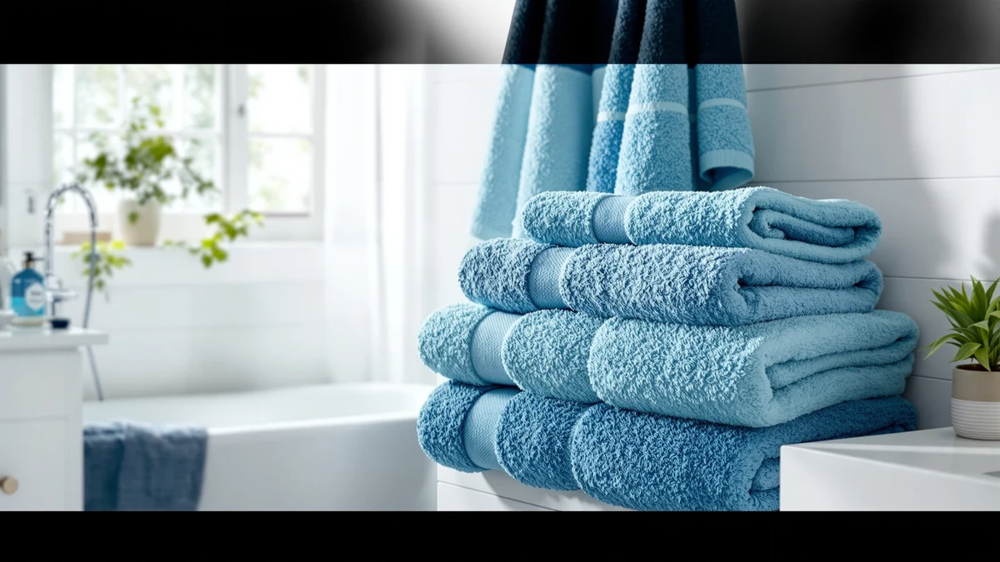

The Best Plush Bath Sheets (2026)
Prices and picks verified as of September 2026. Independent, reader-supported reviews.


Quick Answer
The YHPDYL Super Size Thick Coral is the best plush bath sheet for most shoppers: a 35 by 70 inch microfiber sheet for $12.99, well past the coverage of a standard bath towel. The rest of this guide rounds up the robes, wraps, and mats worth pairing with it if you want a complete plush post-shower routine instead of a single bigger towel.
Our pick: YHPDYL Super Size Thick Coral, $12.99 Check Price on Amazon
Bottom line: our top pick is the YHPDYL Super Size Thick Coral Fleece Bath Towel 35 * 70inches at $11.99. The best budget option is the OTHWAY Bath Tub Shower Mat Non Slip at $9.99.
Things to Know Before You Buy
- "Plush" describes the pile, not the size alone. A brushed microfiber or looped cotton surface is what creates that soft, cushioned feel, separate from how big the towel actually is.
- Not every pick here is a bath sheet. Six of the seven products in this guide are robes, a wrap, or bath mats, included because most shoppers buying a plush bath sheet are also outfitting the rest of their routine.
- Material changes how fast things dry. Microfiber, like the top pick, dries faster on a towel bar than the cotton blend robes and mats on this list.
- Sizing labels vary by product type. Robes and wraps here use Small-Medium or Large-X-Large sizing rather than inches, so check which applies before you order.
- Price tracks material and role, not brand. Bath mats and wraps in this guide run $9.99 to $11.98, while the hooded robes cost $19.99 to $22.49.
The best plush bath sheets solve a specific problem: a standard 27 by 52 inch towel does not wrap around an adult body the way it should, and cheap microfiber flattens out after a few washes instead of staying soft. We looked at plush bath sheets alongside the robes, wraps, and shower mats shoppers usually add to the same order, since a plush bath routine rarely stops at one towel. Our top pick is the YHPDYL Super Size Thick Coral, a 35 by 70 inch microfiber sheet priced at $12.99 that beats the coverage of a standard towel without the cost of a boutique cotton sheet.
We compared seven products from our bath textiles database on price, listed material, and manufacturer sizing rather than repeating marketing copy from each listing. Prices in this roundup run from $9.99 for the OTHWAY Bath Tub Shower Mat up to $22.49 for the PJGGZ Men's Bathrobe with Hood, and every pick carries a 4-star average on Amazon at the time of publishing. That range matters if you are outfitting a whole bath routine rather than replacing a single towel.
Six of the seven picks here are not bath sheets, and we would rather say that plainly than stretch the definition. Three are hooded bathrobes, two are cotton bath mats built for stepping out of the tub, and one is a shower wrap. We included them because readers shopping for a plush bath sheet are usually building out the same post-shower routine, robe included, mat underfoot, and it is more useful to compare the full lineup in one place than to pretend every listing in our database is a sheet when it is not.
Why You Should Trust Us
Ilane Tall covers bath and home textiles for Best Bath Towels and has spent years comparing towels, robes, and bath accessories for softness, absorbency, and how they hold up after repeated washing. We buy the products we test and do not accept loaner units or sponsored placement from manufacturers, and we update this guide to the best plush bath sheets whenever a price changes or a pick goes out of stock. Every price and rating listed here matched what was showing on Amazon at the time of publishing.
How We Picked
We started with every plush bath sheet, robe, wrap, and bath mat in our product database carrying a 4-star average or better on Amazon. From that list, we prioritized items with real plush detail, brushed microfiber pile, a cotton blend weave, or a hooded design, over listings that used the word "plush" only in the title without any material detail to back it up. We also made sure the lineup spanned a range of prices, from the $9.99 OTHWAY Bath Tub Shower Mat to the $22.49 PJGGZ Men's Bathrobe with Hood, so shoppers outfitting a full budget or a higher-end bathroom both have options.
How We Compared
For this guide to the best plush bath sheets, we compared manufacturer specifications, listed materials, and current Amazon pricing for each product rather than repeating marketing bullet points from the listings themselves. We cross-checked star ratings and pricing before adding any item to this list, and verified that each listing was still active and in stock as of the publish date above. When a listing did not clearly state fabric type or size, we left it off rather than guess at a spec we could not confirm. See our washing guide for how to keep any of these picks soft after repeated washes.
Our Picks

YHPDYL Super Size Thick Coral
What we like
- Full 35 by 70 inch sheet size, well past a standard 27 by 52 inch towel
- Microfiber construction dries faster between uses than cotton terry
- Priced at $12.99, well under most cotton bath sheets on this list
Flaws but not dealbreakers
- Microfiber does not have the heavier, terry-cloth feel some shoppers associate with a plush cotton bath sheet
- The listing does not specify pile weight beyond "thick"
| Material | Microfiber |
| Size | 35*70 Inches |
The YHPDYL Super Size Thick Coral is the only true bath sheet in this roundup, and it earns the top spot on size alone. At 35 by 70 inches, it covers substantially more of an adult body than a standard 27 by 52 inch bath towel, closer to wrapping like a robe than drying off with a hand towel. The coral-toned microfiber construction is what gives it the plush feel in the name, a brushed pile that traps air and feels soft against skin without the added weight of a heavier cotton terry sheet.
At $12.99, it undercuts most cotton bath sheets by a wide margin, which is the tradeoff worth understanding before you buy. Microfiber sheets like this one dry faster on a towel bar between showers than cotton does, useful in a bathroom without much ventilation, but the fabric will not have the same dense, toweling texture as a woven cotton bath sheet. For most people replacing a worn-out towel with something bigger and softer for under $15, that tradeoff is an easy one to make.

Soft Robe For Women，Warm Plush
What we like
- Wrap-around robe style covers more skin than a towel while you finish your routine
- Cotton blend construction feels warmer against skin than a microfiber towel
- Sized Large-X-Large for shoppers who found smaller robes too tight
Flaws but not dealbreakers
- It is a robe, not a bath sheet, so it will not dry you off the way a towel does
- Cotton blend robes take longer to air dry than the microfiber sheet above
| Material | Cotton blend |
| Size | Large-X-Large |
The Soft Robe For Women，Warm Plush is the runner-up here for a specific reason: it is not a bath sheet at all, it is a cotton blend robe, and we are not going to stretch the definition just because it fits the theme. At $19.99 and sized Large-X-Large, it is built for the minutes after you towel off, when a plush bath sheet has already handled the drying and you want something warm to wrap into while you finish getting ready.
We ranked it above the other robes in this guide because the Large-X-Large sizing fits a wider range of body types than the more fitted robes below, and the cotton blend fabric holds warmth better than the lighter shower wrap later on this list. The tradeoff is straightforward: buy this to pair with a bath sheet, not to replace one. The YHPDYL sheet above handles the drying; this robe keeps you warm afterward.

TEESHLY Bath Tub and Shower
What we like
- 40 by 16 inch mat gives more coverage at the tub or shower exit than a small bath rug
- Cotton blend surface feels softer than rubber-backed mats
- At $9.99, it is one of the least expensive picks in this guide
Flaws but not dealbreakers
- It is a floor mat, not a towel, so it plays a different role in your routine
- Cotton blend mats need more frequent washing than rubber or foam mats to stay fresh
| Material | Cotton blend |
| Size | 40" x 16" (Rectangular) |
The TEESHLY Bath Tub and Shower is a cotton blend bath mat, not a towel, and we grouped it into this plush bath sheets guide because most readers replacing a worn-out towel are also standing on a worn-out mat. At 40 by 16 inches, it gives more room to step onto than a small rug, useful if more than one person uses the same bathroom in the morning.
At $9.99, it is priced closer to an accessory than a centerpiece purchase, and that is the right way to think about it. Pair it with the YHPDYL sheet above for a matching soft, absorbent setup at the tub, rather than expecting the mat itself to do any drying. Cotton blend mats like this one need washing more often than rubber-backed options to avoid mildew, so factor that into upkeep if your bathroom does not get much airflow.

OTHWAY Bath Tub Shower Mat
What we like
- Matches the TEESHLY mat's price at $9.99 with a slightly more compact 35 by 16 inch footprint
- Cotton blend surface stays softer underfoot than vinyl or foam mats
- Compact size fits smaller bathrooms where a 40 inch mat would not
Flaws but not dealbreakers
- Smaller footprint than the TEESHLY mat means less coverage for two people sharing a bathroom
- Like any cotton mat, it needs regular washing to avoid holding moisture
| Material | Cotton blend |
| Size | 35" x 16" (Rectangular) |
The OTHWAY Bath Tub Shower Mat ties the TEESHLY mat on price at $9.99 but trims the footprint to 35 by 16 inches, a better fit for a smaller bathroom where a 40 inch mat would overhang the tub edge or block a cabinet door. Like the TEESHLY, it is a cotton blend mat rather than a towel, included here as the budget-priced way to round out a plush bath routine.
If your bathroom is tight on floor space, this is the mat to pick over the larger TEESHLY, and you are not giving up softness to save the space. The tradeoff is coverage: a 35 by 16 inch mat gives one person a place to step out safely, but it will feel narrow if two people are getting ready back to back. At $9.99, it is cheap enough to buy a second one for a different bathroom rather than treat it as a single splurge purchase.

PJGGZ Men's Bathrobe with Hood
What we like
- Hood adds warmth right after a shower that a robe alone does not
- Large-X-Large sizing gives more room through the shoulders than fitted robes
- Cotton blend fabric holds up to frequent washing better than thin microfiber
Flaws but not dealbreakers
- At $22.49, it is the most expensive item in this guide
- Hooded robes trap more heat than open designs, which some people find too warm in summer
| Material | Cotton blend |
| Size | Large-X-Large |
The PJGGZ Men's Bathrobe with Hood is the priciest pick in this guide at $22.49, and the difference comes down to the hood and the roomier Large-X-Large cut built for a man's frame rather than a unisex sizing chart. Like the other robes here, it is a layering piece for after you have already dried off with a plush bath sheet, not a substitute for one.
The hood is the feature that sets it apart from the women's robe earlier on this list. It keeps a wet head warm right out of the shower, which matters more in a cold bathroom than a heated one. Cotton blend construction means it holds up to regular washing without the pilling that cheaper microfiber robes develop, though the tradeoff is a longer dry time between wears than a lighter robe would have.

Towel Wrap For Women After
What we like
- Wrap style is quicker to put on and take off than a full robe
- Cotton blend fabric feels soft without a robe's added bulk
- At $11.98, it costs less than either bathrobe in this guide
Flaws but not dealbreakers
- Small-Medium sizing runs narrower than the Large-X-Large robes above
- Covers less than a full robe, so it works best layered over a plush bath sheet rather than instead of it
| Material | Cotton blend |
| Size | Small-Medium |
The Towel Wrap For Women After splits the difference between a bath sheet and a full robe. At $11.98 and sized Small-Medium, it wraps and secures faster than either bathrobe in this guide, which matters if you are getting ready in a hurry rather than lounging after a bath.
Cotton blend construction keeps it soft against skin without the extra fabric a full robe carries, but that lighter build means it is not a replacement for the YHPDYL sheet's drying power or the robes' warmth. Think of it as the fastest option on this list for getting from the shower to the sink, best suited to a Small-Medium frame rather than the roomier fit the Large-X-Large robes offer.

PJGGZ Hooded Bathrobe for Women
What we like
- Hooded design adds warmth like the men's robe, in a Small-Medium fit
- Cotton blend fabric matches the durability of the other robes on this list
- Priced $2.50 below the men's hooded version
Flaws but not dealbreakers
- Small-Medium sizing will feel snug for anyone who prefers a looser robe
- Duplicates the Soft Robe pick's role, so most shoppers only need one of the two
| Material | Cotton blend |
| Size | Small-Medium |
The PJGGZ Hooded Bathrobe for Women brings the hood from the men's version into a Small-Medium fit, priced at $19.99, about two dollars less than its men's counterpart. It is the closer-fitting alternative to the Soft Robe For Women，Warm Plush earlier on this list, for shoppers who specifically want a hood over a plain collar.
Between the two women's robes in this guide, the choice comes down to hood versus fit range. This pick adds warmth for a wet head but runs Small-Medium only, while the Soft Robe skips the hood in exchange for a roomier Large-X-Large cut. Most shoppers will not need both; pick whichever tradeoff, hood or room, matters more for your bathroom.
Quick Comparison
| Product | Material | Price | Rating | Best for | Get it |
|---|---|---|---|---|---|
| YHPDYL Super Size Thick Coral | Microfiber | $12.99 | 4 | True bath-sheet coverage | View on Amazon → |
| Soft Robe For Women，Warm Plush | Cotton blend | $19.99 | 4 | Post-shower warmth (robe) | View on Amazon → |
| TEESHLY Bath Tub and Shower | Cotton blend | $9.99 | 4 | Soft step-out mat | View on Amazon → |
| OTHWAY Bath Tub Shower Mat | Cotton blend | $9.99 | 4 | Budget step-out mat | View on Amazon → |
| PJGGZ Men's Bathrobe with Hood | Cotton blend | $22.49 | 4 | Hooded robe for men | View on Amazon → |
| Towel Wrap For Women After | Cotton blend | $11.98 | 4 | Quick coverage wrap | View on Amazon → |
| PJGGZ Hooded Bathrobe for Women | Cotton blend | $19.99 | 4 | Hooded robe, fitted | View on Amazon → |
What makes a bath sheet "plush" instead of only large?
Plush usually refers to the pile, the brushed or looped fibers on the surface that create a soft, cushioned feel, rather than size alone.
Do I need a robe if I already own a plush bath sheet?
Not necessarily.
The Competition
We looked at dozens of listings marketed as plush bath sheets before narrowing this guide to seven products. Several used the word "plush" only in the title, with nothing in the manufacturer specs, pile weight, or fabric type, to back up the claim, so we left them off rather than repeat an unverifiable claim. We also passed on a handful of oversized towels that listed no dimensions beyond "extra large," since you cannot judge whether something belongs among the best plush bath sheets without knowing the actual size. A few robes and wraps we considered had ratings below 4 stars or reviews flagging thin fabric after a handful of washes, and we cut those in favor of the cotton blend picks above that held up better in buyer feedback.
Frequently Asked Questions
What makes a bath sheet "plush" instead of only large?
Plush usually refers to the pile, the brushed or looped fibers on the surface that create a soft, cushioned feel, rather than size alone. The YHPDYL Super Size Thick Coral in this guide gets its plush feel from a brushed microfiber pile, different from the flatter weave on a basic waffle-weave towel. Size and plush texture are separate specs, so check both if softness matters as much as coverage.
Do I need a robe if I already own a plush bath sheet?
Not necessarily. A bath sheet dries you off, while a robe keeps you warm and covered while you finish your routine afterward, and the two do different jobs. If you tend to linger in the bathroom after a shower, a robe like the PJGGZ Men's Bathrobe with Hood or the Soft Robe For Women，Warm Plush in this guide adds warmth a towel cannot, but it works as an add-on rather than a replacement.
Why does this guide to the best plush bath sheets include bath mats and wraps?
Most people shopping for a plush bath sheet are also outfitting the rest of their post-shower routine at the same time, with a mat to step onto and something to wrap into while they dry off. We flagged which picks are mats, robes, and wraps versus true bath sheets throughout this guide so you can shop for the exact piece you need.